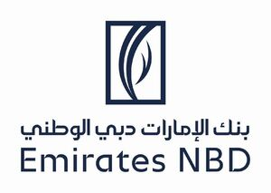

Trade Mark Journal No.2025/027 4 July 2025
WO0000001841590 (9,35,36,42)
Office of origin: United Arab Emirates
Date of International Registration:16 September 2024
Date of designation in the UK:
16 September 2024

The trademark consists of the words Emirates National Bank of Dubai in Arabic underneath the words Emirates NBD in English, all in a distinctive font. Above the words, there is a rectangle with curved shapes inspired by a sailing boat. The logo is in dark blue and white.
The mark contains the colours Dark blue and white.
- Class 9
- Magnetic data media; readers [data processing equipment]; automated teller machines [ATM]; calculating machines; cash registers; computer software applications, downloadable; computer software platforms, recorded or downloadable; computer programs, recorded; computer programs [downloadable software]; computer software, recorded; counterfeit [false] coin detectors; counters; downloadable computer software for managing crypto asset transactions using blockchain technology; downloadable cryptographic keys for receiving and spending crypto assets; downloadable digital files authenticated by non-fungible tokens [NFTs]; downloadable e-wallets; encoded magnetic cards; false coin detectors; magnetic encoders; money counting and sorting machines; mechanisms for coin-operated apparatus; automated bank note sorting machines; apparatus for checking the authenticity of banknotes; banking software; computer terminals for banking purposes; computer communication software to allow customers to access bank account information and transact bank business; credit card terminals; credit cards; encoded credit cards; magnetic card readers; card readers for credit cards; magnetic encoded cash cards; magnetic encoded payment cards; encoded bank cards; encoded loyalty cards; encoded reward cards; credit card encoded machines; magnetic encoded debit cards; encoded prepaid credit cards; magnetically encoded bank cards.
- Class 35
- Advertising; business management; business administration; office functions; accounting; administration of consumer loyalty programs; advertising by mail order; advisory services for business management; arranging and conducting of commercial events; arranging subscriptions to electronic toll collection [ETC] services for others; arranging subscriptions to telecommunication services for others; business appraisals; bookkeeping for electronic funds transfer; business auditing; business consultancy services for digital transformation; business efficiency expert services; business inquiries; business intermediary services relating to the matching of potential private investors with entrepreneurs needing funding; business intermediary services relating to the matching of various professionals with clients; business investigations; business management and organization consultancy; business management assistance; business management consultancy; business management of reimbursement programmes for others; business organization consultancy; business research; commercial or industrial management assistance; competitive intelligence services; compilation of information into computer databases; compilation of statistics; computerized file management; consumer profiling for commercial or marketing purposes; corporate communications services; data processing services [office functions]; data search in computer files for others; development of advertising concepts; development of marketing concepts; direct mail advertising; dissemination of advertising matter; drawing up of statements of accounts; financial auditing; interim business management; market intelligence services; market studies; marketing; marketing in the framework of software publishing; marketing research; media relations services; negotiation and conclusion of commercial transactions for third parties; negotiation of business contracts for others; online advertising on a computer network; opinion polling; organization of exhibitions for commercial or advertising purposes; organization of trade fairs; outdoor advertising; outsourced administrative management for companies; outsourcing services [business assistance]; pay per click advertising; payroll preparation; personnel management consultancy; personnel recruitment; preparation of business profitability studies; professional business consultancy; providing business information; providing business information via a website; providing commercial and business contact information; public relations; rental of cash registers; sponsorship search; systemization of information into computer databases; targeted marketing; tax filing services; tax preparation; telemarketing services; updating and maintenance of data in computer databases; updating and maintenance of information in registries; updating of advertising material; financial marketing; financial records management; auditing of financial statements; business advice relating to growth financing; advertising services relating to financial services; provision of online financial services comparisons; business advice relating to financial re-organisation; financial statement preparation and analysis for businesses; presentation of financial products on communication media, for retail purposes; promotion of financial and insurance services, on behalf of third parties; recruitment consultants in the financial services field.
- Class 36
- Financial affairs; monetary affairs; accident insurance underwriting; actuarial services; administration of financial affairs; arranging finance for construction projects; bail-bonding; banking; brokerage; brokerage of carbon credits; business liquidation services, financial; capital investments; charitable fund raising; check [cheque] verification; clearing, financial; clearing-houses, financial; credit bureau services; crowdfunding; debt advisory services; e-wallet payment services; credit card services; customs brokerage; debit card services; debt collection agencies; deposits of valuables; exchanging money; factoring; fiduciary; financial advice relating to tax; financial analysis; financial appraisals in responding to calls for tenders / financial appraisals in responding to requests for proposals [RFPs]; financial customs brokerage services; financial exchange of crypto assets; financial management of reimbursement payments for others; financial research; financial consultancy; financial evaluation [insurance, banking, real estate]; financial information; financial management; financial sponsorship; financing services; fire insurance underwriting; fiscal assessments; fiscal valuations; fund investments; electronic funds transfer; electronic funds transfer provided via blockchain technology; electronic transfer of crypto assets; guarantees; hire-purchase financing; home banking; instalment loans; insurance; insurance brokerage; insurance consultancy; insurance information; insurance underwriting; investment of funds; issuance of credit cards; issue of tokens of value; issuing of travellers' checks [cheques]; lease-purchase financing; leasing of real estate; lending against security; life insurance underwriting; loans [financing]; mobile banking services; mortgage banking; mutual funds; numismatic appraisal; online banking; organization of monetary collections; organization of collections; preparation of quotes for cost estimation purposes; processing of credit card payments; processing of debit card payments; providing financial information via a website; providing rebates at participating establishments of others through use of a membership card; provident fund services; real estate affairs; real estate agencies; real estate appraisal; real estate brokers; real estate management; real estate services; rent collection; rental of offices [real estate]; renting of apartments; rental of real estate; repair costs evaluation [financial appraisal]; retirement payment services; safe deposit services; savings bank services; securities brokerage; stamp appraisal; stock exchange quotations; stocks and bonds brokerage; surety services; trusteeship; online business banking services; financial appraisal for repair costs evaluation; health insurance underwriting; housing agents; jewellery appraisal; trading of financial instruments, namely, sukuk sharia-compliant bonds.
- Class 42
- Artificial intelligence consultancy; computer programming; computer programming services for data processing; computer rental; computer security consultancy; computer system design; computer technology consultancy; computer virus protection services; computer software consultancy; computer software design; computer system analysis; conducting technical project studies; consultancy in the design and development of computer hardware; conversion of computer programs and data, other than physical conversion; conversion of data or documents from physical to electronic media; data encryption services; data security consultancy; development of computer platforms; digitization of documents [scanning]; duplication of computer programs; electronic data storage; electronic monitoring of credit card activity to detect fraud via the internet; electronic monitoring of personally identifying information to detect identity theft via the internet; hosting computer websites; information technology [IT] support services [troubleshooting of software]; installation of computer software; internet security consultancy; maintenance of computer software; mining of crypto assets / cryptomining; monitoring of computer system operation by remote access; monitoring of computer systems for detecting unauthorized access or data breach; monitoring of computer systems to detect breakdowns; off-site data backup; platform as a service [PaaS]; providing information relating to computer technology and programming via a website; providing search engines for the internet; providing virtual computer systems through cloud computing; recovery of computer data; rental of computer software; rental of data centre facilities; rental of web servers; research and development for others; research in the field of artificial intelligence technology; server hosting; software as a service [SaaS]; software development in the framework of software publishing; software engineering services for data processing; technical research; technological services; technological consultancy; technological consultancy services for digital transformation; technological research; user authentication services using blockchain technology; user authentication services using single sign-on technology for online software applications; user authentication services using technology for e-commerce transactions; authenticating banknotes; updating of memory banks of computer systems; updating of computer software; design and development of databases; data authentication via blockchain; data storage via blockchain; blockchain as a service [BaaS]; computer programming of smart contracts on a blockchain.
Emirates NBD Bank (P.J.S.C)
Representative: Al Tamimi & Co., P.O. Box 44046, Abu Dhabi, UNITED ARAB EMIRATES